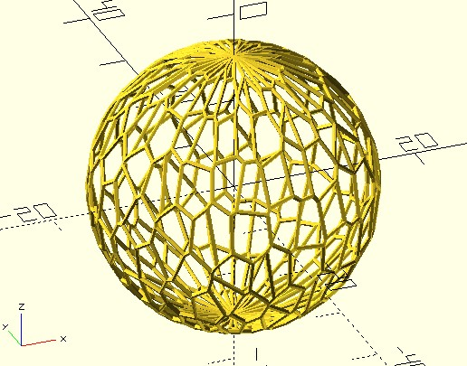
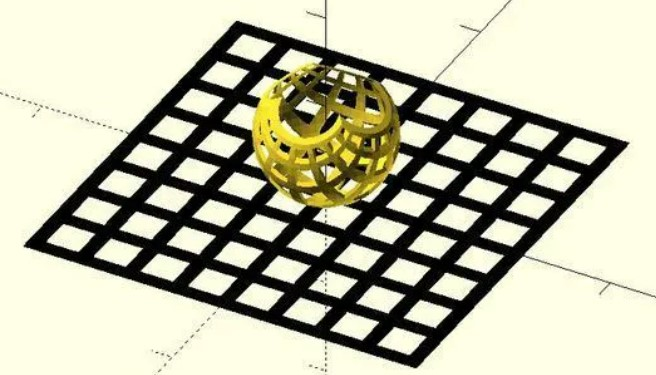
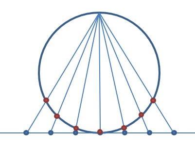
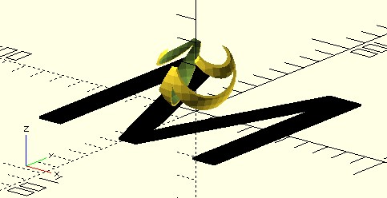
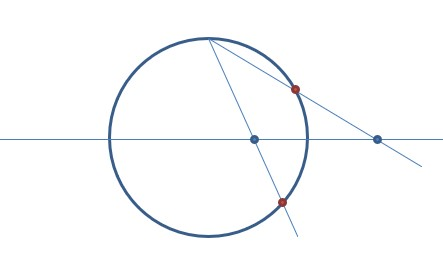
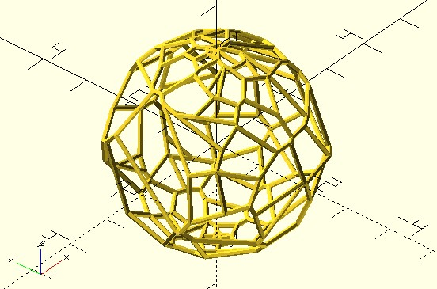
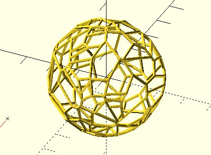
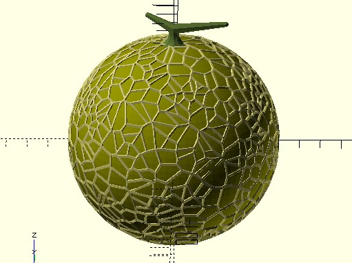

球面 Voronoi
April 5, 2022在〈半平面交集〉談到，可以透過變形的方式，建立環形的 Voronoi，如果想要建立球面的 Voronoi，也可以透過類似的方式，想辦法將 vrn2_cells_space 傳回的資料變形為球。
只不過這種方式，處理起來麻煩，而且越是靠近兩極，因為細胞的行（column）數不變，細胞越會顯得小而密集：

極點投影
在談到球面 Voronoi 的建立方式前，先來看個有趣的東西：

這個作品是〈極點投影〉，你可以在圖中的球體極點放一盞燈，雖然球面上的洞大小不同，然而影子會形成大小相同的正方形，原理很簡單，因為本來就是平面上整齊排列的正方形，投影至球面交集而得到的模型：

dotSCAD 的 stereographic_extrude 模組，實現了這種模型的建構，你只要畫個平面上的圖案，就可以自動生成：
use <stereographic_extrude.scad>
dimension = 100;
stereographic_extrude(shadow_side_leng = dimension, convexity = 10)
text("M", size = dimension, valign = "center", halign = "center");
color("black")
text("M", size = dimension, valign = "center", halign = "center");
這會產生以下的模型：

球面／平面 Voronoi
方才的模型產生方式，其實是〈Stereographic projection〉的一種變化，球是在投影的平面之上，另一種投影方式是，平面橫切於球的赤道：

這麼一來，北半球面上的點，會投影至球外的平面，南半球面上的點，會投影至球內的平面，有趣的是，如果對平面上投影的點求 Voronoi，得到的多邊形頂點投影回球面，就能構成球面 Voronoi。
dotSCAD 的 vrn_sphere 函式實現了以上的過程，可以指定球面上隨機散佈的點，生成球面 Voronoi：
use <voronoi/vrn_sphere.scad>
use <polyline_join.scad>
use <util/rand.scad>
n = 100;
radius = 2;
pts = [
for(i = [0:n])
let(
theta = rand(0, 180),
phi = rand(0, 360)
)
radius * [sin(theta) * cos(phi), sin(theta) * sin(phi), cos(theta)]
];
cells = vrn_sphere(pts);
for(cell = cells) {
polyline_join(concat(cell, [cell[0]]))
sphere(.05);
}
這會構成以下的模型：

嗯？怎麼感覺兩極還是蠻密的？這邊順便介紹一個觀念，球面上隨機點分佈，若想要儘量均勻，單純讓 theta 隨機於 0 到 180、phi 隨機於 0 至 360，這種方式是不對的；類似地，圓內隨機點分佈，單純讓半徑隨機地於 0 到 radius，theta 隨機於 0 到 360 也是不對的，為什麼呢？因為單純讓半徑隨機地於 0 到 radius，相同的一組 theta 下，越內越密不是嗎？
你應該看看〈Disk Point Picking〉、〈Sphere Point Picking〉有關圓內、球面的隨機點分佈說明。
dotSCAD 的 pp_disk、pp_sphere 函式實現了其中相關的數學，可以在圓內或球面取得隨機、均勻分佈的點，例如：
use <voronoi/vrn_sphere.scad>
use <polyline_join.scad>
use <pp/pp_sphere.scad>
n = 100;
radius = 2;
pts = pp_sphere(radius, n);
cells = vrn_sphere(pts);
for(cell = cells) {
polyline_join(concat(cell, [cell[0]]))
sphere(.05);
}
這會繪製出以下的模型：

那麼，你應該可以想像出來，〈哈密瓜〉是怎麼實現的了吧！
